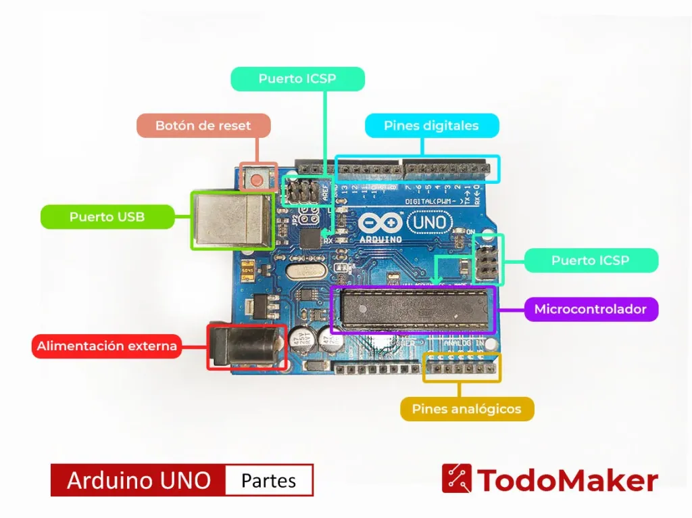

Arduino es una plataforma de hardware libre basada en una placa con microcontrolador y pines para interactuar con el entorno. Cuenta con su propio software para programar en C/C++ y, gracias a su diseño abierto y bajo costo, se ha convertido en el estándar mundial para prototipos electrónicos, siendo la puerta de entrada ideal al mundo de la tecnología.
Sirve principalmente para crear dispositivos electrónicos interactivos que recopilan datos del entorno físico y automatizan procesos mediante el control de luces, motores y pantallas. Se utiliza ampliamente en robótica educativa y domótica para desarrollar prototipos rápidos, conectar sensores ambientales y transformar ideas abstractas de software en soluciones tangibles conectadas al mundo real.
Es el programa clásico y oficial creado por la propia plataforma para desarrollar proyectos de arduino. Está disponible tanto en versión de escritorio como en la nube, y resulta ideal tanto para principiantes como para expertos. Cuenta con un editor de texto sencillo, un sistema de autocompletado de código, un gestor para instalar librerías con un solo clic y el indispensable Monitor Serial para ver los datos de los sensores en tiempo real.
Es una plataforma web gratuita de Autodesk que permite programar Arduino sin necesidad de tener la placa física. Funciona mediante un entorno visual donde puedes armar circuitos con cables, luces y sensores en la pantalla, y luego programarlos usando bloques de código o texto (C/C++). Es excelente para practicar, probar ideas rápidamente y aprender desde cero sin riesgo a dañar componentes.
